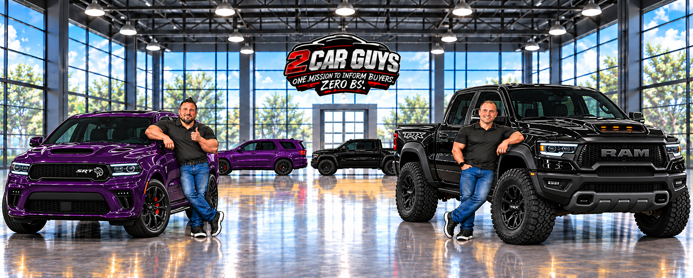
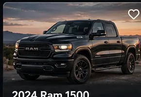
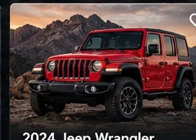

Compare Vehicles Fast
Know what you gain — and what you give up.
Compare listed prices and mileage, then open the window stickers to look at original equipment. Ask us to confirm the details that matter to you.

Ram 1500
Truck • 4WD examples
Truck • 4WD examples

Jeep Wrangler
SUV • 4WD examples
SUV • 4WD examples